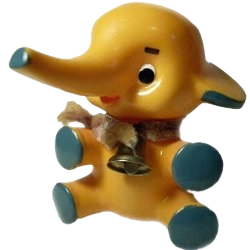
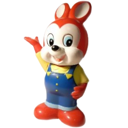
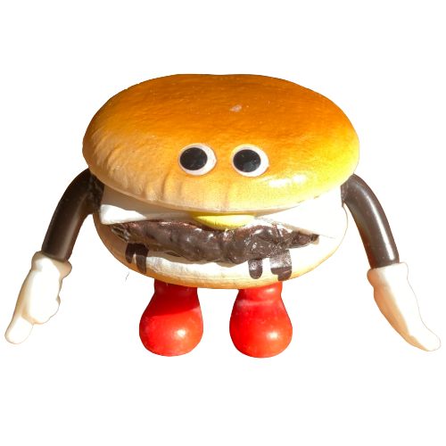

なないろまーぶる
My Favorite Mascots
Nostalgic Showa retro figures.
From Showa retro to VAG gachapon.
The history of my collection.
During the Showa era (1926–1989), these corporate mascots were placed at the entrances of Japanese pharmacies and given out as presents to children. All items in the collection featured here belong to the site administrator.
Retro Favorites

Sato-chan
Familiar in front of pharmacies. Each one is hand-painted and has great depth.

Pyon-chan
Used to watch over the storefront in the old days. Where did they all go?

Showa Retro Goods Part 1
The early Colgen Kowa frog, before Kero-chan & Koro-chan, etc.

Showa Retro Goods Part 2
Chugai Pharmaceutical's Guronsan dog Ron-chan and Mr. Hanahana finger puppet, etc.


Showa Retro Goods Part 4
Bunmeido Kankan Bear coin bank, Ski Yarn's Ski Boya finger puppet, etc.

Showa Retro Goods Part 5
Victor's Nipper dog ceramic figurine, National Boya coin bank, etc.

Showa Retro Goods Part 6
DC Card's Kappa and Tanuki figures, Yamato Transport's Kuroneko coin bank, etc.

Showa Retro Goods Part 7
Fujisawa Pharmaceutical's Leopon figure, Sankyo's Hansei-zaru Jiro-kun finger puppet, etc.

Showa Retro Goods Part 8
Fujiya's Peko-chan figurine, NEC's Bazar de Gozarre ceramic coin bank, etc.

Showa Retro Goods Part 9
Tiovita Ojisan walking toy, Kayumi-chan finger puppet, etc.


New Favorites

